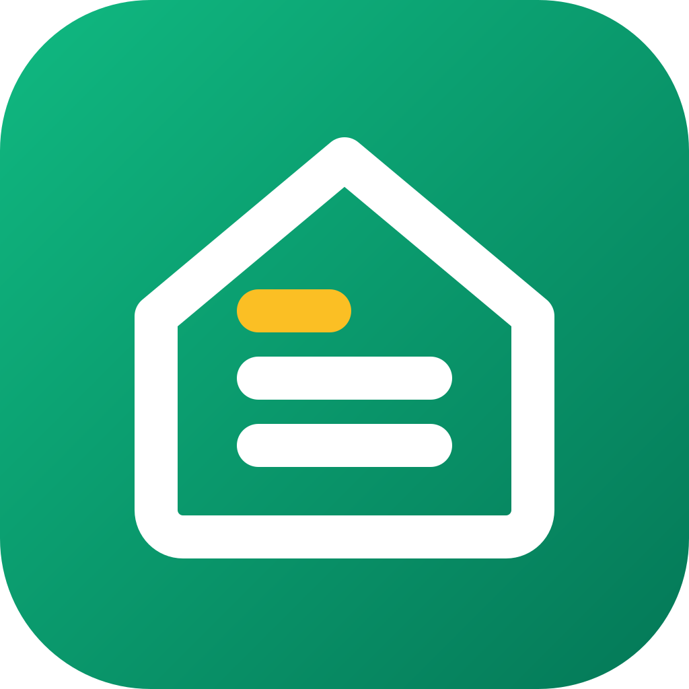

Homezio Privacy Policy
Homezio helps a household keep track of supplies: who says something is running low or finished, what was bought, and when it will run out again. This policy explains what information the app handles, why, and the choices you have.
The short version
- Homezio works without an account. Until a home owner turns on sync, everything stays on the phone.
- With sync on, your home’s data is stored on our cloud database so the household’s phones can share it.
- If you use bill scanning or translation, the bill photos or text are sent to an AI service to be read or translated.
- No ads, no tracking across apps or websites, and we don’t sell your information.
- You can delete your account and your home’s data from inside the app at any time.
What we handle
| Information | Why | Where it lives |
|---|---|---|
| Owner account: email address and password (stored only as a secure hash) | To sign in, sync, and recover your home on a new phone | Our cloud database |
| Staff and family phones: an anonymous device sign-in created when someone joins with a join code | To let that phone see and update its home | Our cloud database |
| Household content: home name, people’s first names, picture icons, roles, PINs, preferred language; items, brands, shops, prices, expiry dates; “running low / finished / bought” history; requests typed by staff | The app’s core features: forecasts, shopping lists, reminders and spending reports | On the phone; also in our cloud database when sync is on |
| Bill photos and screenshots you choose to scan | To read the items and prices from the bill, and so you can look back at the bill later | Kept in private cloud storage for your home; sent to our AI provider to be read |
| Item names and staff messages | To translate them into each person’s chosen language | Sent to our AI provider to be translated; translations are saved with the item |
We don’t collect your location, contacts, advertising identifiers or browsing activity. Reminders are scheduled on the phone itself as local notifications. Photos are only accessed when you pick or take one to scan.
Who we share it with
Only the service providers that run Homezio, and only to provide the app:
- Supabase: hosts our database, sign-in and file storage.
- Anthropic: the AI service (Claude) that reads bills and translates text. Anthropic processes this content to return the result and does not use it to train its models.
- Apple and Google: deliver the app and process subscription payments if you subscribe. We don’t receive your card details.
Inside a home, everyone who belongs to it can see that home’s items and history. Owners and adults can see everything in it, including bills. We disclose information to authorities only when the law requires it.
How long we keep it
Data stays for as long as the home or account exists. Items and history you remove are hidden in the app and kept only so other phones can sync the change. When you delete your account, the data described below is removed from our systems; backups held by our hosting provider are overwritten within their normal backup cycle.
Deleting your data
- Delete your account: Settings → Delete account. This removes your sign-in and any home where you are the only owner with an account, including its items, history, bills, bill photos and requests. Homes that another owner also manages are kept, and you are removed from them.
- Phones without an account: Settings → Erase data removes everything Homezio stored on that phone.
- Owners can remove any person from their home in Settings → People.
You can also ask us to delete your data, or for a copy of it, using the contact details below.
Children
Homezio is meant to be set up by adults. Children can be added to a home by a parent as a profile with a first name and a picture icon, and can only tap the item tiles. Children don’t create accounts or give us any contact details.
Security
Data is sent over encrypted connections. Each home’s data is separated by access rules on the server, so phones can only read homes they belong to. Bill photos are kept in private storage that only members of that home can open.
Changes
If we change this policy, we’ll update the date above. For significant changes, we’ll also let you know in the app.
Contact
PCI Solutions · pcisolutionsuk@gmail.com